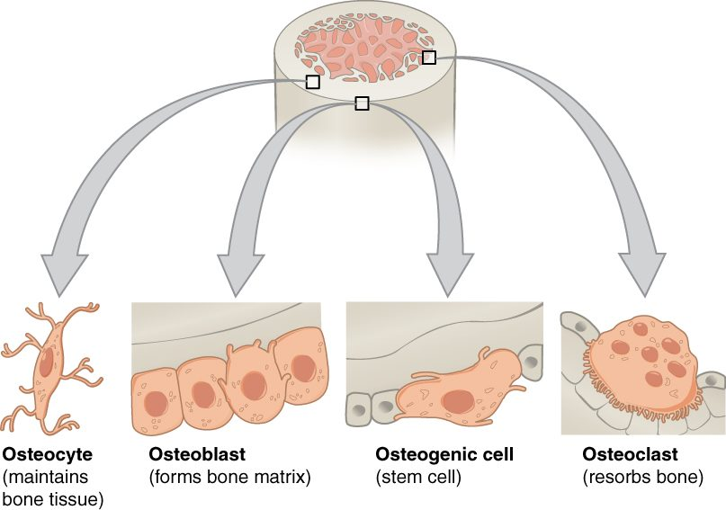
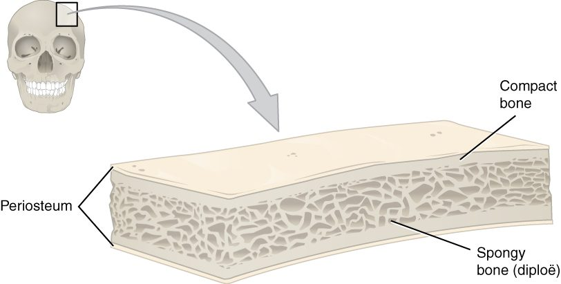

Under a microscope, a slice of bone looks less like a solid block and more like the cut end of a bundle of tree trunks, each with rings around a central hole. This page covers bone histology from the inside out: what the bone matrix is made of, the four kinds of bone cells and what each does, how compact bone is built from those ringed cylinders called osteons, and how spongy bone, with its lattice of thin struts, differs from it. You met bone tissue briefly with the connective tissues; here it gets the close look it deserves.
Bone matrix: mineral and collagen
Try an old kitchen experiment. Soak a chicken leg bone in vinegar for a week and it keeps its shape but becomes so rubbery you can tie it in a knot. Bake another bone for hours in a hot oven and it keeps its shape too, but it crumbles when you squeeze it. The vinegar, an acid, dissolved the minerals and left the protein. The heat burned off the protein and left the minerals.
Those two results show the two parts of the bone matrix, the extracellular material that makes up most of bone tissue:
- The organic part (about a third of bone's dry weight) is mostly collagen fibers, the same tough protein fibers you met in connective tissue, set in a small amount of ground substance. Collagen resists pulling and gives bone a little flexibility, so it bends slightly instead of snapping.
- The inorganic part (about two thirds) is mineral: tiny crystals of hydroxyapatite, a form of calcium phosphate that also carries hydroxide ions. The crystals form along and between the collagen fibers. They make bone hard and let it resist squeezing.
Bone needs both. Collagen alone is a rope: strong when pulled, useless when pushed. Mineral alone is chalk: hard, but it shatters. Together they work like steel bars set in concrete, a material that resists both pulling and pushing.
New matrix is laid down first as osteoid (oste- = bone, -oid = like): the organic matrix, collagen and ground substance, before any mineral is added. Over the following days to weeks, calcium phosphate crystals are deposited in it and it hardens. Healthy bone always has a thin seam of fresh osteoid wherever bone is being built.
The four bone cells
Bone is living tissue, and four kinds of bone cells build it, keep it and remove it (Figure 1). Their names share oste- (bone) and differ in the ending, and the endings tell you what they do: -genic means producing, -blast means a budding, building cell, -cyte means a mature cell, and -clast means breaking.

- Osteogenic cells (-genic = producing) are the stem cells of bone. They are flat cells in the inner cellular layer of the periosteum and in the endosteum, and in the canals that carry vessels through bone. They are the only bone cells that divide. Their daughters differentiate into osteoblasts. (Some books call them osteoprogenitor cells.)
- Osteoblasts (-blast = bud, builder) build bone. They sit side by side on bone surfaces and secrete osteoid, then help mineralize it by concentrating calcium and phosphate around the collagen. They do not divide. They also release chemical messengers that control how many osteoclasts form, so bone building and bone removal are coordinated.
- Osteocytes (-cyte = cell) are former osteoblasts that became trapped in the matrix they made. They are the most numerous bone cells, over 90% of them. Each one sits in a small cavity, a lacuna, and sends dozens of thin arms through tiny channels to touch its neighbors. Osteocytes keep the matrix alive and sense how the bone is being loaded, signaling to osteoblasts and osteoclasts where to add or remove bone.
- Osteoclasts (-clast = break) break bone down. They are huge cells with several nuclei, formed when many precursor cells fuse. Those precursors come from the same blood-forming line in the red marrow as macrophages, not from osteogenic cells. An osteoclast seals itself onto the bone surface. Its folded, frilled membrane facing the bone pumps out hydrogen ions, and the acid dissolves the mineral. It also releases enzymes from its lysosomes that digest the collagen. The released calcium and phosphate move into the blood. This breaking down and absorbing of bone is called resorption (re- = back, sorb- = suck in), and it leaves a shallow pit under the cell.
| Osteoblast | Osteocyte | Osteoclast | |
|---|---|---|---|
| Job | Builds bone: secretes osteoid and helps mineralize it | Maintains matrix; senses load and signals the other cells | Resorbs bone: dissolves mineral and digests collagen |
| Comes from | Osteogenic cells | Osteoblasts walled in by their own matrix | Fused precursor cells of the macrophage line from red marrow |
| Where | On bone surfaces, under periosteum and endosteum | Inside the matrix, each in a lacuna | On bone surfaces, in the pits it digs |
| Size and nuclei | Medium, one nucleus | Small body with long arms, one nucleus | Very large, several nuclei |
| Divides? | No | No | No |
| Effect on calcium in the blood | Takes calcium out of the blood into new bone | Little direct effect | Releases calcium from bone into the blood |
A memory hook: osteoblasts build, osteoclasts chew. In healthy adult bone, the two work in balance, and the next topics show what happens when that balance shifts.
Compact bone
Cut across the shaft of a long bone and the wall looks solid and ivory-white. That is compact bone, also called cortical bone (cortex = bark, outer layer). It forms the thick wall of the diaphysis and a thin outer shell over every bone, and it makes up about 80% of the skeleton's mass. It is heavy and strong, and best at resisting loads along the bone's length.
Under a microscope, compact bone turns out to be built of thousands of parallel cylinders, each a few tenths of a millimeter across, running along the length of the bone. Each cylinder is an osteon.
The osteon
An osteon (also called a Haversian system) is the structural unit of compact bone (Figure 2). Picture a tree trunk cut across: rings around a central core. Its parts:
- Central canal (also called the Haversian canal): the channel down the middle of the osteon, running along the bone's length. It carries small blood vessels and nerves.
- Lamellae (lamella = thin plate; singular lamella): the rings of bone matrix around the central canal, like the rings of a tree. In each lamella the collagen fibers run in one spiral direction, and in the next lamella they spiral the other way. That crisscross, like the layers of plywood, helps the osteon resist twisting.
- Lacunae (lacuna = small lake or pit): the small cavities between lamellae. Each holds one osteocyte.
- Canaliculi (canaliculus = little canal): hair-thin channels that radiate from each lacuna across the lamellae. The arms of the osteocytes run through them and touch the arms of neighboring osteocytes, connected by gap junctions. Canaliculi link every lacuna, ring by ring, to the central canal.
- Perforating canals (also called Volkmann's canals): channels that run across the bone at right angles to the central canals. They join the central canals of neighboring osteons to each other and to the vessels of the periosteum and the medullary cavity.
Why the canaliculi matter
Mineralized matrix is almost impermeable: oxygen and nutrients cannot diffuse through it. An osteocyte walled in by it would die without a route out. The canaliculi are that route. Nutrients and oxygen leave the vessels in the central canal and pass from osteocyte to osteocyte, through the fluid in the canaliculi and through the gap junctions between the cells' arms. Wastes travel the other way. Because diffusion works only over short distances, no osteocyte in compact bone sits more than about a tenth of a millimeter from a central canal, and that sets the width of an osteon.
Between osteons lie fragments of older osteons, and just under the periosteum and the endosteum a few lamellae run around the whole bone. You do not need their names; notice only that compact bone is almost entirely lamellae of one kind or another.
Spongy bone
Now cut through the end of a long bone. Instead of solid bone you see a lattice of thin bony struts with spaces between them, like a sponge or a honeycomb. That is spongy bone, also called cancellous bone (cancell- = lattice) (Figure 3).

- Its struts are trabeculae (trabecula = little beam). Each is a few layers of lamellae, with osteocytes in lacunae and canaliculi between them.
- There are no osteons and no central canals. A trabecula is thin, so its osteocytes can reach the blood vessels in the marrow spaces through canaliculi that open on its surface.
- The trabeculae are not arranged at random. They line up along the directions of the loads the bone usually carries, like the struts of a bridge. That puts bone where the stress is and leaves space where it is not. A later topic in this chapter explains how bone manages that.
- The spaces between trabeculae hold marrow, and in the bones that keep red marrow, that is where blood cells are made.
Spongy bone fills the epiphyses of long bones and the inside of short, flat and irregular bones. It is always covered by a shell of compact bone. In a flat bone of the skull, the spongy layer is sandwiched between two plates of compact bone and has its own name, the diploë (Greek, double or folded) (Figure 4).

Compact and spongy bone compared
| Compact bone | Spongy bone | |
|---|---|---|
| Other name | Cortical bone | Cancellous bone (diploë in flat skull bones) |
| Looks like | Solid and dense | A lattice of struts with open spaces |
| Unit of structure | Osteon: lamellae around a central canal | Trabecula: a few layers of lamellae, no central canal |
| How osteocytes get nutrients | From vessels in the central canal, through canaliculi | From vessels in the marrow spaces, through canaliculi opening on the surface |
| Where | Shaft wall of long bones; outer shell of every bone | Ends of long bones; inside short, flat and irregular bones |
| Share of skeleton's mass | About 80% | About 20% |
| Best at | Resisting loads along its length | Resisting loads from many directions while staying light |
| What fills the spaces | Almost no spaces except canals | Marrow, red in some bones |
| Surface for bone cells to work on | Small for its mass | Large for its mass, so it is built and broken down faster |
That last row matters later. Because spongy bone has so much surface where osteoblasts and osteoclasts can work, it changes faster than compact bone, both when bone is gained and when it is lost.
Putting it together
Bone tissue is a matrix of collagen hardened by calcium phosphate crystals, built by osteoblasts, kept by osteocytes and removed by osteoclasts, with osteogenic cells in reserve. In compact bone, the matrix is arranged as osteons: rings of lamellae around a central canal, with osteocytes in lacunae linked by canaliculi. In spongy bone, it forms trabeculae with marrow between them. The next topic follows how these cells build a skeleton in the first place.